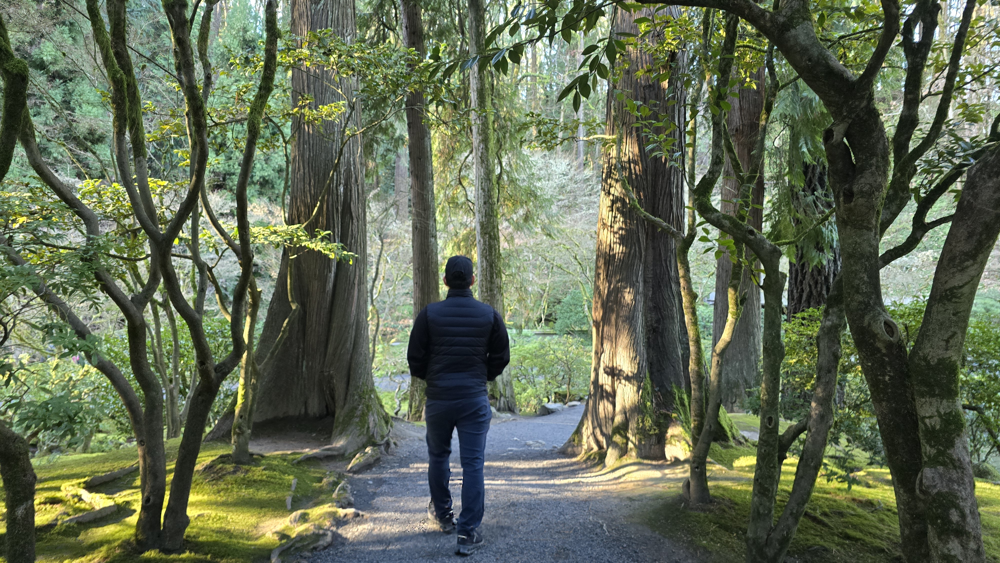
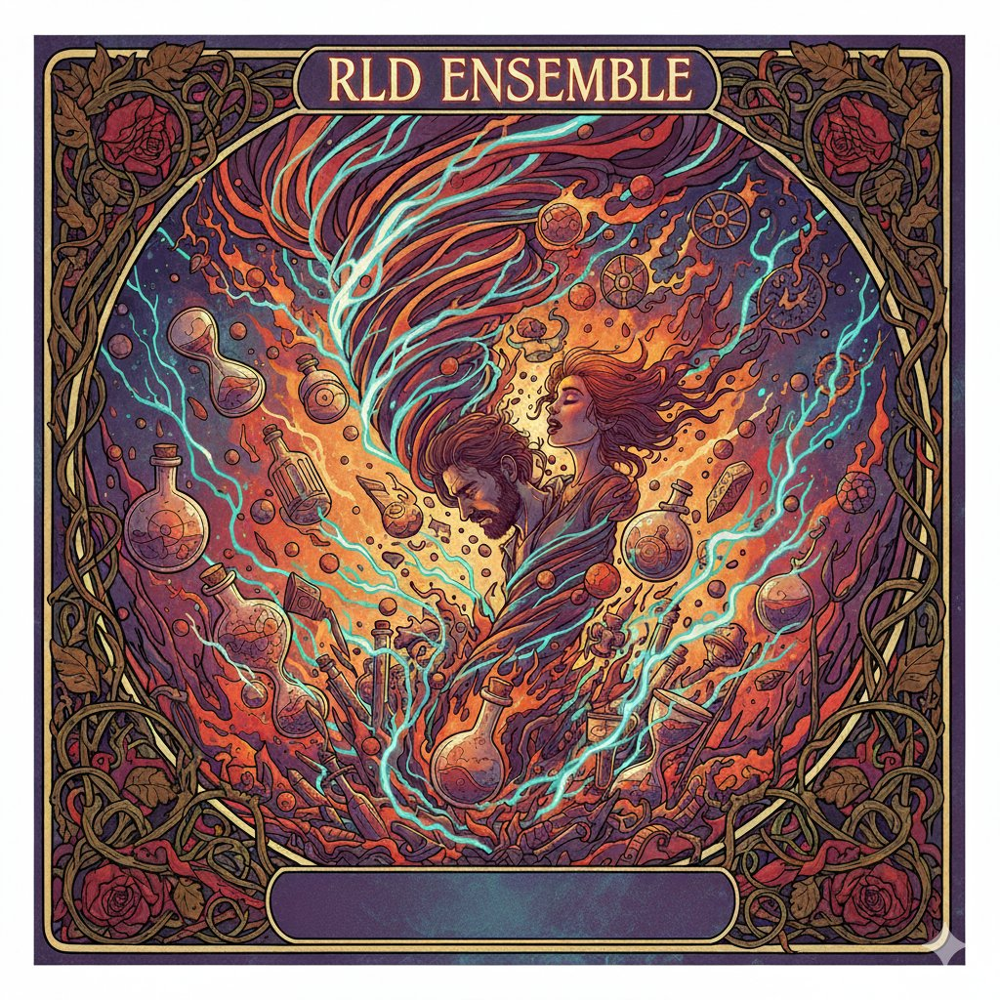

ASSORTED MINDS: Un Viaje Musical sin Fronteras
RLD ENSEMBLE es un proyecto de exploración musical que trasciende géneros, idiomas y métodos de producción. ASSORTED MINDS (Mentes Diversas) representa nuestra primera colección completa: canciones que navegan desde el indie folk hasta el rock progresivo, desde baladas introspectivas hasta experimentación sonora vanguardista.
Producción Híbrida
Cada canción es el resultado de una colaboración única entre creatividad humana, instrumentación digital y analógica (DAWs), y herramientas de inteligencia artificial.
RLD ENSEMBLE is a musical exploration project that transcends genres, languages, and production methods. ASSORTED MINDS represents our first full collection. Each song is the result of a unique collaboration between human creativity, digital and analog instrumentation, and artificial intelligence tools.
Un Proyecto Multilingüe
Nuestras letras están escritas en inglés, español y náhuatl, reflejando una visión multicultural y una profunda conexión con las raíces latinoamericanas.


"Cinco mundos paralelos que coexisten sin pedirse permiso."
Canciones originales en español y Nahuatl. Desde la cosmovisión prehispánica hasta las calles de hoy — folklore, historia colonial, leyenda y trova urbana.